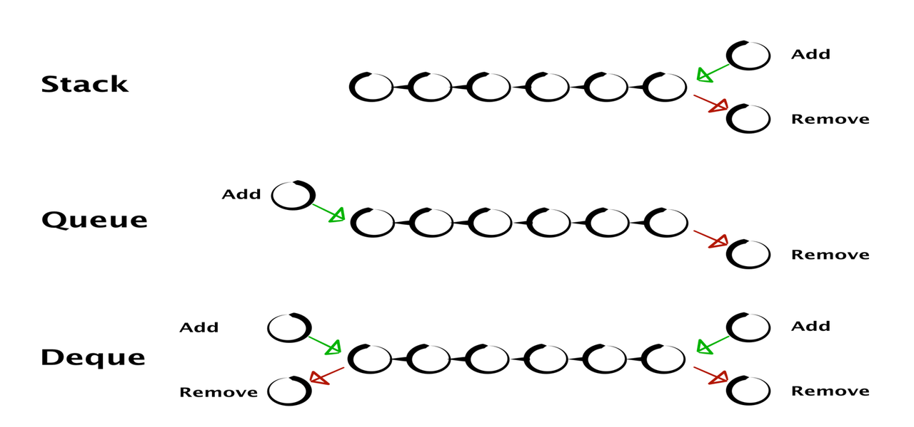

So the code above is the code using c++ special library like <stack> or <queue>.
If you want to work with it by linked list, take a look the codeing files below.
We can absolutely rebuild back and queue by using linked list. So to make it more clear, why don't we build a preset of it to use?

This picture help you to imagine how stack and queue work.
I already wrote the template for stack and queue below
struct node{
/*
Your variable here
*/
node *nxt = NULL,*prev = NULL;
};
struct Stack{
node *head,*tail;
int _size=0;
}
Stack s; // creat new stack
/*
void x is your variable, one or may be many
_push to add element to linked list
*/
void _push(void x, Stack s){
node *tmp = (node*)malloc(sizeof(node));
if(s.head == NULL){
/*
tmp's data equals to input data (x)
*/
tmp->nxt = s.tail;
tmp->prev = s.head;
s.head = tmp;
s.tail = tmp;
/*
Creat first element of linked list
*/
s._size++; // increase size of the stack
return;
}
tmp->chr = chr;
s.tail->nxt = tmp;
tmp->prev = s.tail;
s.tail = tmp;
/*
Add an element to the end of stack
*/
s._size ++;
}
/*
_pop() is used to remove the last element of stack
*/
void _pop(Stack s){
node *tmp = (node*)malloc(sizeof(node));
if(s.tail == NULL)return;
tmp = s.tail;
s.tail = s.tail->prev;
free(tmp); // free the memoey of last element
s._size--;// decrese size of stack
}
bool isEmpty(Stack s){// check if stack empty or not
return !s._size;
}
// depend on your datatype
// return the top element of stack
void _top(Stack s){
return s.tail->x;
}
int _size(Stack s){
return s._size;
}
struct node{
/*
Your variable here
*/
node *nxt = NULL,*prev = NULL;
};
struct Queue{
node *head,*tail;
int _size=0;
}
Queue q; // creat new stack
/*
void x is your variable, one or may be many
_push to add element to linked list
*/
void _push(void x, Queue q){
node *tmp = (node*)malloc(sizeof(node));
if(q.head == NULL){
/*
tmp's data equals to input data (x)
*/
tmp->nxt = q.tail;
tmp->prev = q.head;
q.head = tmp;
q.tail = tmp;
/*
Creat first element of linked list
*/
q._size++; // increase size of the queue
return;
}
tmp->chr = chr;
q.tail->nxt = tmp;
tmp->prev = q.tail;
q.tail = tmp;
/*
Add an element to the end of queue
*/
q._size ++;
}
/*
_pop() is used to remove the first element of queue
*/
void _pop(Queue q){
node *tmp = (node*)malloc(sizeof(node));
if(q.head == NULL)return;
tmp = q.head;
q.head = q.head->nxt;
free(tmp); // free the memoey of last element
q._size--;// decrese size of stack
}
bool isEmpty(Queue q){// check if stack empty or not
return !q._size;
}
// depend on your datatype
// to return the first element of queue
void _front(Queue q){
return q.head->x;
}
// depend on your datatype
// to return the last element of queue
void _back(Queue q){
return q.tail->x;
}
int _size(Queue q){
return q._size;
}